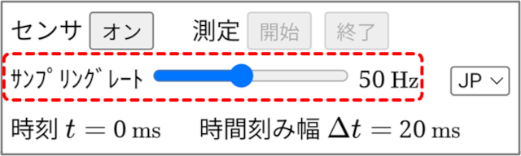
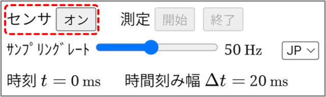
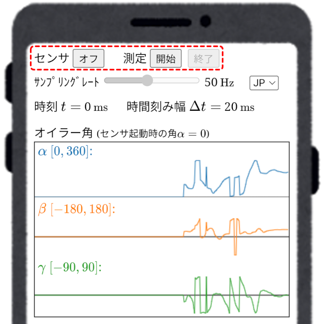
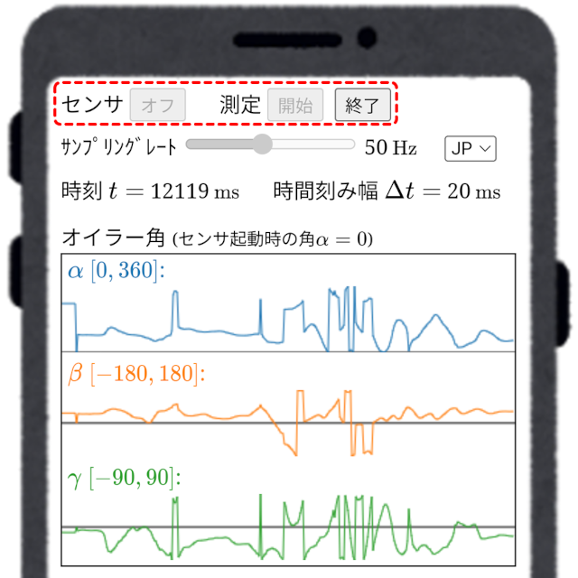
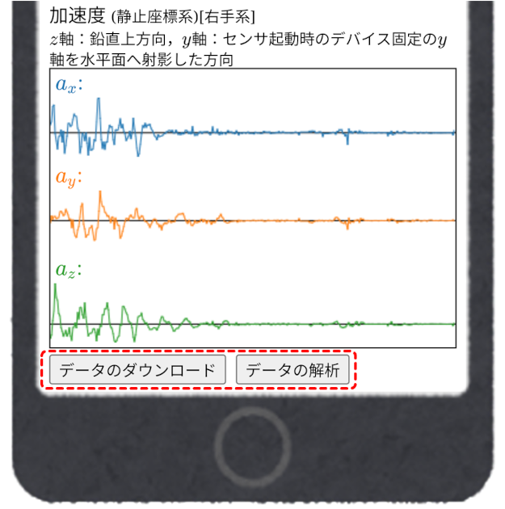
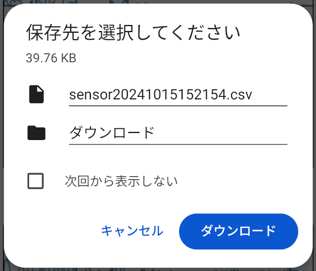
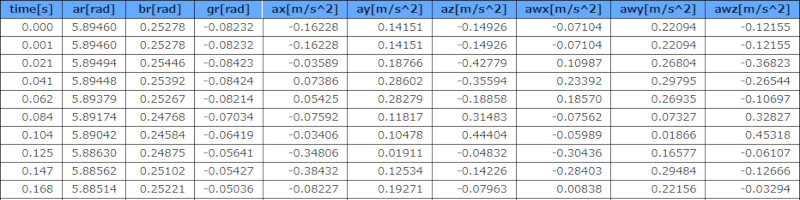
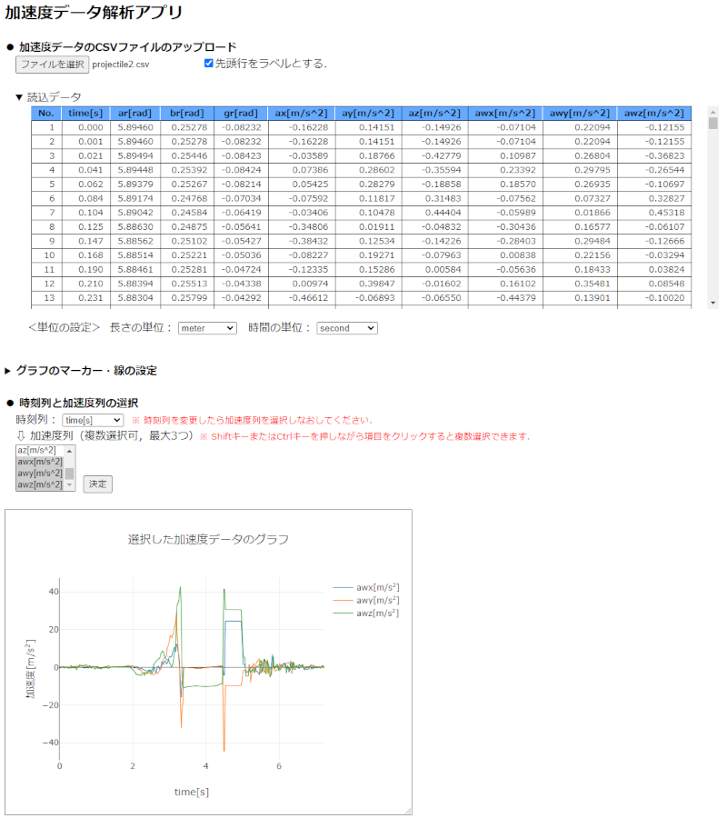
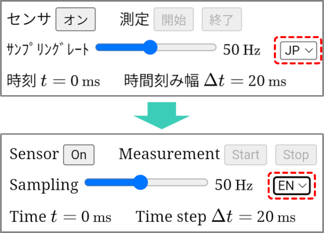

■ 操作方法
-
サンプリングレートの設定
スライダーバーでサンプリングレートを$10\sim100\ {\rm Hz}$の範囲で設定する．$50\ {\rm Hz}$の場合，データを1秒間に50回測定する（時間刻み幅$\Delta t=\frac{1000}{50}=20\ {\rm ms}$）．サンプリングレートはセンサ起動前に設定する必要がある．
-
センサの起動
センサ「オン・オフ」ボタンの表示が「オン」のとき，センサは停止状態であり，測定開始・終了ボタンは無効（押せない状態）となっている．この状態でセンサ「オン」ボタンを押すとセンサが起動して，ボタンの表示が「オフ」に変わり，測定「開始」ボタンが有効となる．センサが起動すると，時々刻々変化するオイラー角と加速度のグラフが表示される（この状態ではまだデータは記録されない）．センサが起動している状態でセンサ「オフ」ボタンを押すと，センサが停止し，測定開始ボタンは無効となる．センサ起動中はサンプリングレートの設定を変更できない．センサ起動中の画面
 -
測定の開始
センサが起動した状態で測定「開始」ボタンを押すと，測定を開始してデータが記録される．この状態では，測定「開始」ボタン及びセンサ「オフ」ボタンが無効になり，測定「終了」ボタンが有効になる．測定を開始すると，時間の経過とともに時刻$t$の値が増加する．時刻はおおよそ時間刻み幅$\Delta t$ずつ増加していくが，センサの精度に応じて誤差を伴う．データ測定中の画面
 -
測定の終了
データ測定中に測定「終了」ボタンを押すと，測定を終了し，測定「終了」ボタンが無効になり，測定「開始」ボタン及びセンサ「オフ」ボタンが有効になる．この状態で測定「開始」ボタンを押すと，記録したデータを消去し，再び測定を開始するので注意する必要がある．測定を終了してデータが記録されている状態にあると，データをダウンロードすることやデータ解析アプリにアクセスすることができる．
-
データのダウンロード
測定アプリ画面を下にスクロールすると最下部に「データのダウンロード」ボタンと「データの解析」ボタンがあり，測定を終了するとこれらのボタンが有効になる．画面下部
「データのダウンロード」ボタンを押すと，保存先の選択ダイアログが現れるので，ファイル名と保存先を指定して測定データをCSV形式で保存することができる（デフォルトのファイル名は「sensor + 年月日時刻.csv」となる）．保存先の選択ダイアログ
CSV形式で保存されたデータの1行目はラベル行となっている．データの各列は，1列目が時刻列（ラベル：time[s]），2～4列目がオイラー角$\alpha,\ \beta,\ \gamma$（ラベル：ar[rad], br[rad], gr[rad]），5～7列目がデバイスに固定された座標系での加速度の$x,\ y,\ z$成分（ラベル：ax[m/s^2], ay[m/s^2], az[m/s^2]），8～10列目が静止座標系での加速度の$x,\ y,\ z$成分（ラベル：awx[m/s^2], awy[m/s^2], awz[m/s^2]）である．測定データの例
ダウンロードした測定データをスマートフォンのファイル共有機能などでPCに送れば，PC上でデータを解析できる． -
データの解析
測定終了後に測定アプリ画面最下部の「データの解析」ボタンを押すと，加速度解析Webアプリに移動し，測定データを即座に解析することができる．加速度解析アプリ（PC画面）
 -
言語の選択
測定アプリ画面上部にある言語選択メニューで英語(EN)か日本語(JP)を選択して，アプリの表示言語を切り替えることができる（現時点では英語と日本語のみ）．